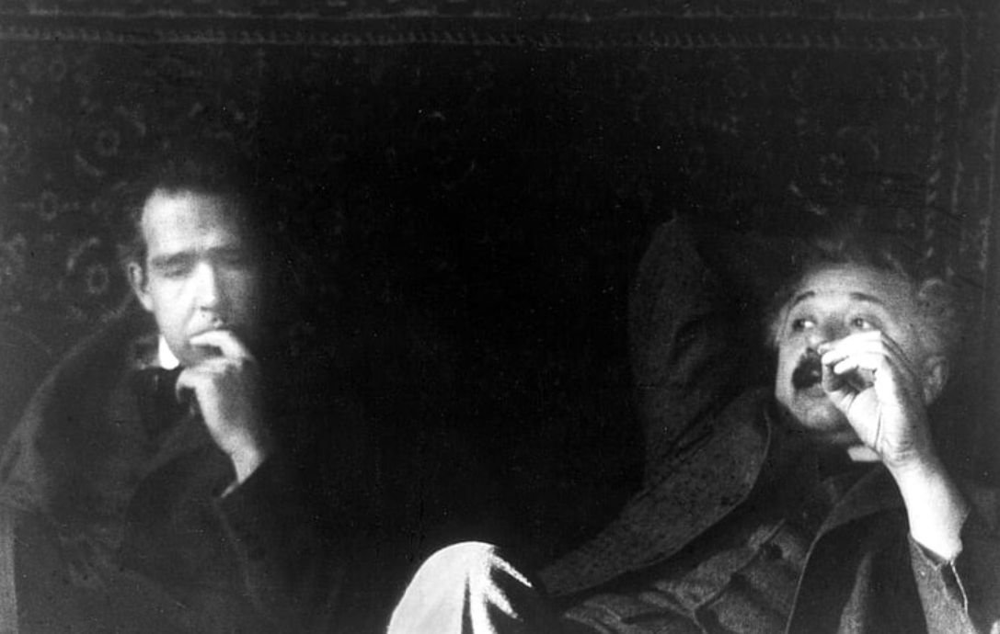

Interesting Physics
On this page I plan on sharing those things in physics that I find cool (or not). I might also share things unrelated that are non the less interesting.
Book Recommendations and Reviews
Foundations of Quantum Mechanics
Roderich Tumulka
I like this book a lot becuase it actually gets very advanced at the end despite it having no prerequisites. I also believe it is one of the best textbooks on the foundations of quantum mechanics. If you're looking for a textbook on foundations this one is great.
Speakable and Unspeakable in Quantum Mechanics
This book is pretty good. It is a compelation of Bell's papers on the foundations of quantum mechanics. Although I find that Bell is not the best at explaining what he means, I like the book becuase it is written by Bell. It is pretty understandable after reading Tumulka's book.
Quantum Field Theory
Mark Srednicki
I've been working on this book for the past year now and I love it. Although I think it could be too hard for those that are not ready. If you've gone through a large portion of Sakurai, then this textbook is the best out of all those I've seen. I love Srednicki!

Back-in-Time and Faster-than-Light Travel in General Relativity
Serguei Krasnikov
I've read parts of this book and have been wanting to read the rest for a long time. The title is really cool and I have all the requisite knowledge. I find it so interesting that there is at least some real science to time travel, although we won't be doing it anytime soon! Serguei Krasnikov is a real deal physicist with results named after him. Also this book can be thought of as simply the mathematical implications of general relativity, but his title is way cooler. I will finish this book one day!
Great Physics Youtubers
There are so many wonderful youtubers that make great physics related videos. Below are just a few of my favorite.
Dr. Jorge S. Diaz is a wonderful physics youtuber. He gives detailed videos on the history of physics. His videos on the old quantum theory are amazing. He has taught me so much.
Richard Behiel makes amazing and very long physics videos explaining every detail of the given subject. Each of his videos are worth your time. I particular loved his lecture video Bell's Theorem, a Glitch in Reality.
Curt Jaimungal interviews famous physicists and great thinkers. It is always interesting to listen to his podcast-length videos and broaden my horizons into subjects that I know very little. There is also always philosophy involved in his channel. I highly recommend!